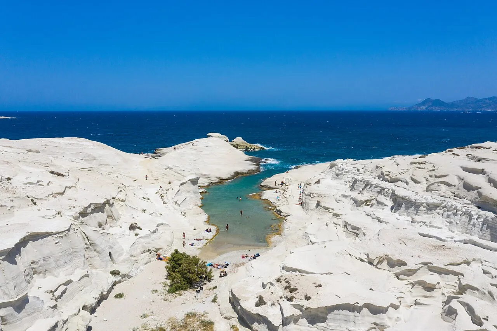

Sarakiniko
Milos, Grèce · baignade, snorkeling

Paysage lunaire de roche volcanique blanche sculptée par la mer. On y nage dans des bassins et des chenaux turquoise.
- Lieu
- Milos, Grèce
- Niveau
- Intermédiaire
- Activités
- baignade, snorkeling
- Type d'eau
- Mer / océan
- Coordonnées
- 36.75, 24.43 (position approximative du secteur)
Dangers à connaître
- Roche glissante et profondeur variable.
- Aucune ombre, lumière aveuglante.
Le conseil d'Ocean Buddy
Les sauts depuis les roches sont risqués : vérifie la profondeur à chaque fois.
Ouvrir dans Ocean Buddy Télécharger sur l'App Store
Source : Fiche Ocean Buddy · septembre 2026 · à vérifier localement.